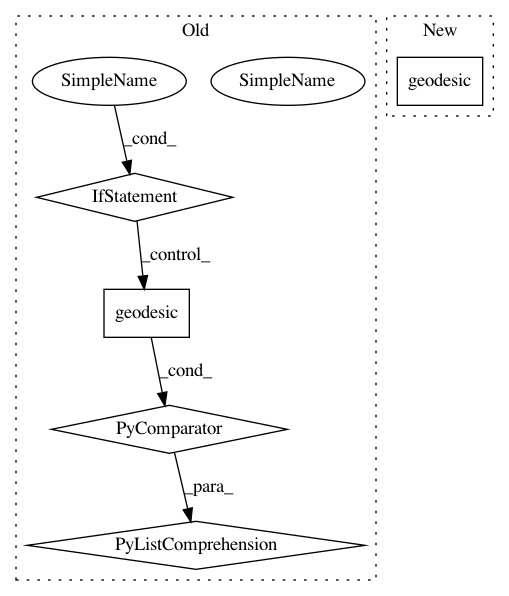

d46ec02efab15f9def0369e26349a4558b125111,examples/plot_geodesics.py,,,#,38
Before Change
n_steps = 10
all_t = np.linspace(0, 10, n_steps)
points = np.vstack([geodesic(t) for t in all_t])
fig = plt.figure(figsize=(15, 5))
After Change
print(geodesic(all_t))
im = plt.imshow(geodesic(all_t), animated=True)
def updatefig(*args):
In pattern: SUPERPATTERN
Frequency: 3
Non-data size: 5
Instances
Project Name: geomstats/geomstats
Commit Name: d46ec02efab15f9def0369e26349a4558b125111
Time: 2018-01-31
Author: ninamio78@gmail.com
File Name: examples/plot_geodesics.py
Class Name:
Method Name:
Project Name: geomstats/geomstats
Commit Name: 2a07ace76a6c93ec0519419bd4e37fd88b3c0217
Time: 2018-02-02
Author: ninamio78@gmail.com
File Name: examples/plot_geodesics.py
Class Name:
Method Name: main
Project Name: geomstats/geomstats
Commit Name: dae22e6fa804158483d32755d6866c451737984a
Time: 2020-02-13
Author: niklas.koep@gmail.com
File Name: geomstats/geometry/product_manifold.py
Class Name: ProductManifold
Method Name: geodesic